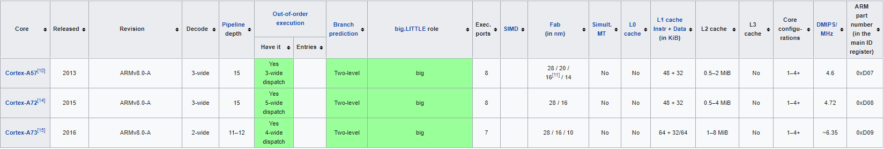
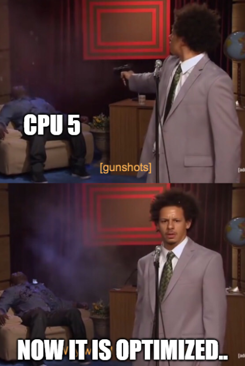
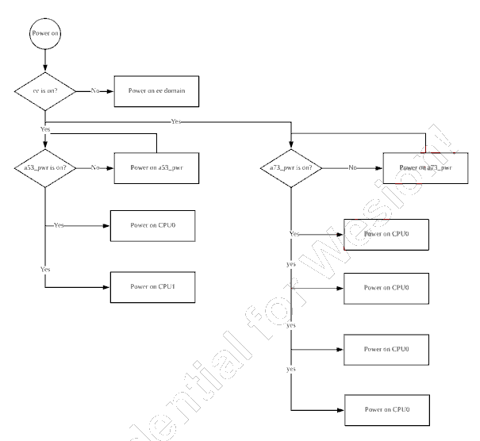

as contd. from my last article,
I wanted to explore more about why the A311D and the RK3399 underperformed in my prime_bench tests,
even thought they were on-paper
a greater spec than the better performing Snapdragon 820..
as discussed previously, the prime_bench stresses to show three main things:
to explain this anomaly, we need to look at the balance of these three parameters,
but before that, we must discuss the spec-wise difference of each SoC:
Amlogic A311D: A processer using the big.LITTLE configuration of cores, with 4x A73 big cores, and 2x A53 small cores, 6 cores total..
the system is specifically of the Aarch64 (ARM 64bit & ARMv8) architecture,
Rockchip RK3399: A processer using the big.LITTLE configuration of cores, with 2x A72 big cores, and 4x A53 small cores, 6 cores total..
the system is specifically of the Aarch64 (ARM 64bit & ARMv8) architecture,
Snapdragon 820: A processer using the big.LITTLE configuration of cores, with 2x A57 big cores, and 2x A57 small cores, 4 cores total..
the system is specifically of the Aarch64 (ARM 64bit & ARMv8) architecture,
The A311D has the highest of the clockspeeds, clocking in at 2.2/ 1.8GHz with the ability to overclock to 2.4/ 2.2Ghz..
The Snapdragon 820, at 2.2Ghz/ 1.6GHz
The RK3399, at last with 1.8/ 1.4GHz
from this, it seems slightly absurd,
how can the fasted clocked processer, come in at 2nd, the second fastest clocked at 1st
so it obviously be something from the other two parameters..,
All the SoCs use the same ARMv8-A architcture, but there is a bit more to it... this chart below, shows the differences between the main big cores of the SoC, and the variations of the things like the pipeline depth, and out-of-order execution dispatch width, etc.

as seen from this chart, the instructions per second is in descending order, the A73, the A72, and the A57..
so, how can the A57 cores from the snapdragon, get more done, with less!?
this leads to the final conclusion that, the RK3399 and A311D must be highly cache deficient, and this is on some part directly the reason for the deficiency in performance..
the A73 cores in the A311D, must need to spend more instruction on trying to fit all the data within the given limit, rather than working on the computational task.
unfortunately we can't just increase the cache, as it is an onchip, hardware limitation.
the only option is to disable a few of the cores to reduce the shared cache usage,
this in theory
should allow for the A73 cores to work, better, faster and optimise the task a bit better..

but which cores should we disable ??

from this power sequence from the A311D's, we see the A53 cores are detrimental to the bootup process, and shouldn't be tampered with for this reason, I chose to disable the cores CPU_4 and CPU_5 which are the last two A73 cores..
I will do some testing here, and will post the results..
to my dismay, disabling cores did NOT affect the single core performance, which seems sad, but it doesn't mean its totally unusable..
as said before, prime bench is only a test for compute, and is for testing processers under extreme conditions, such an intense situation won't happen when using a normal apps meant for other things..
in real life tests, the A311D is actually the better of the three processers tested, in general performance and overall capability..
the RK3399, and the Snapdragon 820 come in at a tight 2nd place interms of general performance...
I hope to make more improvements in the software, and make more real life equivalent tests, in the coming near future :)